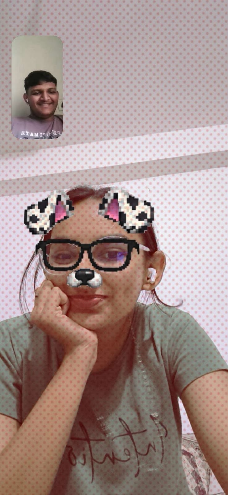

Your bakbak
Tari vaat sambhalvi have mari favourite aadat chhe.
Tara mate banaveli ek nani si duniya…
Vruu ne malya pehla, relationships vishe mari thinking etli mature nahoti. Respect ane clear intentions ketla important chhe, e hu haju samajto hato.
Tane malya pachhi hu dhime dhime vadhu thoughtful thayo. Aa growth mari potani journey chhe — ane ena mate hu thankful chhu. Tu koi responsibility nathi, bas mari life ma ek special person chhe. 🤍
Tu mari life ma aavi ane badhu thodu alag thai gayu. Hu emotions ne vadhu samajva lagyo, trust ne value karva lagyo, ane vaat kari ne samasya solve karvi e pan shikhyo.
Hu perfect nathi, pan hu better communicate karva, vadhu thoughtful rehva ane darek ne respect karva roj try karu chhu.
Best friends thi aapde ahiya sudhi aavya — ane e journey mara mate khub special chhe.
Tari vaat sambhalvi have mari favourite aadat chhe.
Tari cute harkato thi maro divas bani jay chhe.
Tu mane je rite samje chhe, e mane bahu game chhe.
Tari sathe farvu, haath pakadvo, ane tane tease karvi.
Hii
Hello
Taru naam?
Vrushti
Taru naam?
Zeeshan
Taro field?
IT
CE
Tu kya ni?
Keshod
Mare bus mate javanu hatu, tari ID aap ne?
Su utavad che? Hu aaj clg ma revani!
Aree ree ID aap ne, mare tane patavi nathi!
Rah jo rahh!
Pachhi number malyo… ane texting sharu thayu. ✨
Ekbijane evi personal vaato kahi je normally bija friends ne na kahiye. E raat pachhi dhime dhime best friends bani gaya.
Tara birthday par me tane “I love you” kidhu ane ek website gift kari. E divas ni confession ane aapdi official dating date alag chhe.
Officially us · 10 OctoberKrushi ane Manthan ni same propose karyu hatu — thodu funny, pan forever yaad rahe evu. 😄
Kyarek hu biji girls ni vaat karu chhu, tane compare karu chhu, jaanine jealous karvano try karu chhu, ke tari friend sathe extra sweet/flirty majaak karu chhu.
Aavi vaatothi tane hurt thai shake chhe — have hu e samajva lagyo chhu. Jealous feel karvu prem no proof nathi, ane tari feelings ne lightly na levani mari responsibility chhe.
“Tari feelings
majaak nathi.”
Mane khabar chhe ke jyare hu koi biji girl ni vaat karu chhu, ke tane koi biji sathe compare karu chhu, tyare tane hurt thay chhe.
Mara mate e normal vaat hoy, pan tara mate e feeling alag hoy chhe. Hu tane hurt karva nathi mangto. Kyarek hu tane jealous karva mate biji girls ni vaat karu chhu, pan mane samajay chhe ke e tane hurt kare chhe.
Tari feelings majaak nathi. Have tane jealous karva karta tane hasavvano try karish.
Hu vadhu saras rite communicate karish ane jaanine tane hurt karvanu bandh karish. Aa promise mara actions thi pan batavish. 🤍
Tu mane samje chhe, mara par trust kare chhe — ane hu tane sauthi vadhu trust karu chhu.
Hu mara dil ni badhi vaato tane kahi shaku chhu, ane tu pan badhu share kare chhe. Ekbijathi kai hide karvani jarur nathi lagti. Tu mane understood feel karave chhe…
Safe to be
ourselves.
Maro award-winning boyfriend resume, Vruu edition.
Terms & conditions: aa badha points par ek hug due chhe.
Perfect hovu jaruri nathi. Ekbijane samajta, respect karta ane sathe grow karta rehvu special chhe.
Aapdi understanding na lidhe haju serious fight nathi thai — long may it stay that way.
Taro voice, tari bakbak, tara haath pakadva, tane tease ane irritate karvi… bas tari presence.
Navratri thi Diwali ni vacation ma lagbhag 25–30 divas ghar par hata. College ma regular mali na shakya, daily video-call pan na thai. Ek divas banne ghar par ekla hata ane normal timepass mate video call kari.
Na koi special topic hato, na koi important vaat... bas tu hati, hu hato ane aapdo timepass hato.

Nothing Special,
But Everything Special.
“Vruu, hu tane promise karu chhu ke hu tane kyarey ekli mukine nahi jau. Game te situation hoy, hu tari sathe vaat kari ne badhu solve karvano try karish.
Ane haan, tane pan aapda relationship mathi dur java nahi dau… pan tari feelings, choice ane happiness hamesha respect karish.
Hu bas etlu j ichhu chhu ke aapde banne ekbijano haath pakdine, ekbijane samjine, sathe aagal vadhiye.”
Haath ma haath, pan ekbijani choice ane boundaries ne hamesha respect kari ne. 🤍
Chalo joiye ke mari Vruu ketli jealous chhe!
A tiny playful quiz — emotions no scientific test bilkul nathi. 😄
Some moments are small. Somehow, they become the ones we keep.
Raat puri thai jay, pan aapdi vaat nahi.
Simple moments, favorite feeling.
Ek ride, ane ghani yaado.
Shared puff always tastes better.
Vruu ni favourite, obviously.
Our very serious sharing system.
Break ni pan sharing.
Bas sathe hoye etlu enough.
“Aa jo” — aapdi daily gallery.
Our own kind of fun.
Ready for your last little surprise?
Ek nani si gift, tara mate.
Tap the gift box to open
Aa gift kholva password nakhje 🤍
Tu mari j cho ❤️